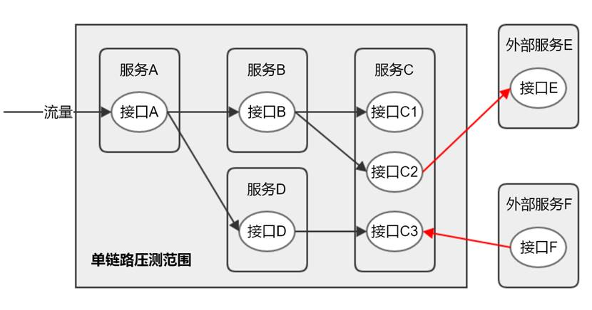
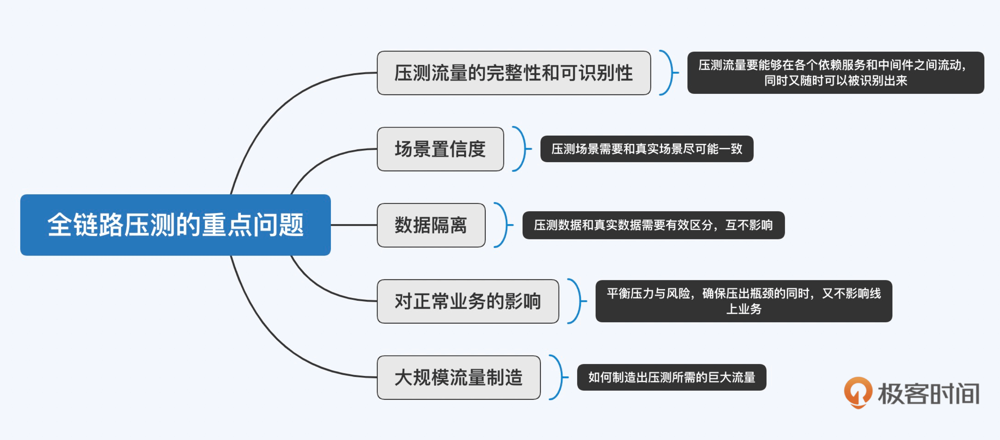
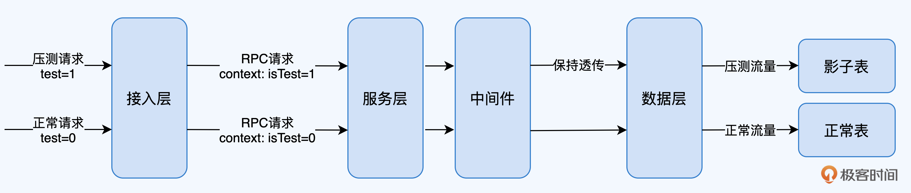
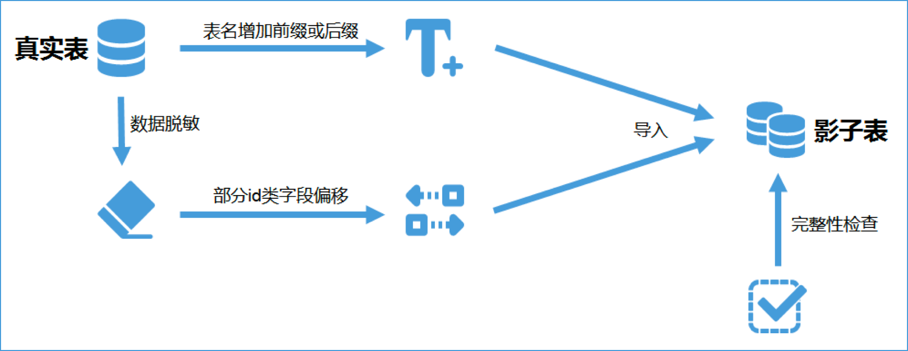
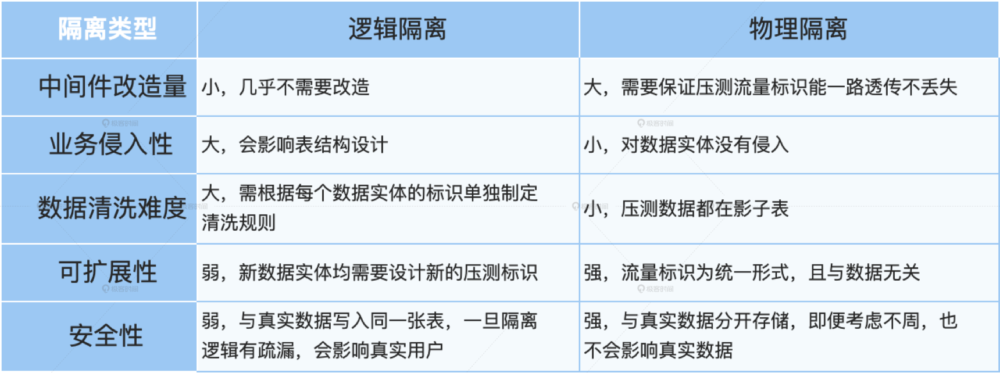

- 00 开篇词 互联网时代，人人肩负容量保障的职责.md.html
- 01 容量保障的目标：容量保障的目标是什么？该如何度量？.md.html
- 02 容量测试与验证：怎样科学实施容量测试？.md.html
- 03 容量指标分析经典5问：响应时间真的是越短越好吗？.md.html
- 04 容量治理的三板斧：扩容、限流与降级.md.html
- 05 全链路压测：系统整体容量保障的“核武器”（上）.md.html
- 06 全链路压测：系统整体容量保障的“核武器”（下）.md.html
- 07 工具进化：如何实现一个分布式压测平台.md.html
- 08 容量预测（上）：第三只眼，通过AI预测服务容量瓶颈.md.html
- 09 容量预测（下）：为不同服务“画像”，提升容量预测准确性.md.html
- 10 浅谈排队论：数学之美，通过建模计算容量.md.html
- 11 与时俱进：云原生下的容量保障新趋势.md.html
- 12 大促容量保障体系建设：怎样做好大促活动的容量保障工作（上）.md.html
- 13 大促容量保障体系建设：怎样做好大促活动的容量保障工作（下）.md.html
- 14 容量保障组织建设：容量保障需要什么样的团队？.md.html
- 15 小公司也能做好容量保障：建设经济实用型的容量保障体系.md.html
- 加餐 学习容量保障的那些经典资料.md.html
- 结束语 做时间的朋友，成功是持续累积而成的.md.html
- 捐赠
05 全链路压测：系统整体容量保障的“核武器”（上）
你好，我是吴骏龙。
通过基础篇的学习，相信你对容量保障的相关知识已经有了基础的了解，知道了容量测试不能简单定义为压力测试，而是验证服务容量的手段；知道了容量指标分析不能只看单一指标，也学习了分析容量指标的5个经典问题；以及了解了容量治理可以采取扩容、限流和降级策略。
从今天开始，我们踏入进阶篇，进阶篇的所有内容都是比较前沿或创新的知识，希望通过大厂前沿经验和我的积累，帮你拓宽视角。在进阶篇，我们从关注度最高的全链路压测开始，与你分享我的实践经验。
你可能会问，到底什么是全链路压测？实施全链路压测要经过几个步骤？有哪些难点坑点？别急，因为内容较多，我会分成两讲，这一讲，先聊聊全链路压测的诞生，以及实施全链路压测前的三项改造工作。下一讲，我们再进一步聊聊两项具体的压测工作，把全链路压测的建设过程完整展示给你。
全链路压测的诞生
2013年对阿里巴巴来说有着非凡的意义，因为那一年，全链路压测诞生了。这可是双11容量保障工作的福音，对守在电脑前的程序员们来说，流量洪峰终于不再那么可怕了。
虽然当时我还没有进入阿里体系内工作，但我作为一名用户亲身参与了从2011年开始的所有双11活动，我能深刻感受到双11系统稳定性的变迁。总体来说，2011年和2012年给我的体验不太好，但2013年就有了很大的改观。
2011年和2012年双11活动的整点，系统不可用的问题对我造成了很大的困扰，访问网页各种报错，连付款都困难，当时把我给着急的呀，生怕要买的东西被抢完了，如果你也经历过那时候的双11，应该能够感同身受。
不过从2013年开始，虽然每年双11的规模都在大幅增长，但除了付款操作偶尔还会被限流以外，网页无法访问这种系统不可用的情况几乎碰不到了。直到后来我进入阿里体系内工作后才知道，当时的阿里人为此付出了大量的努力和汗水，在短短几个月的时间内，大刀阔斧地推动各项改造，构建压测模型，创造性地完成了全链路压测的建设工作，才得以保证双11的稳定进行。要知道，当年双11的流量峰值已经超过了每秒4万笔交易量，放眼全世界也是独树一帜的存在。
阿里的经验证明了一点，那就是对未来可能产生的流量峰值而言，任何预防性的稳定性保障手段，都不如把实际峰值场景模拟出来“看一看” 来的有效，这就好比建造三峡大坝，预计能抵挡千年一遇的洪水，但是否能达到这个目标，还是需要经历多次洪水考验才能证明的。全链路压测就是通过模拟这场千年一遇的洪水，来验证服务系统是否能承载预估的流量峰值。
在全链路压测诞生前，阿里双11的容量保障工作主要是对业务目标进行拆分，对各个服务链路单独进行压测，虽然也进行了大量的压测工作，但实际发生流量洪峰的时候，很多系统的容量还是会有问题。
为什么单链路压测无法排除系统整体容量风险呢，因为整体系统的容量不是由多条“单链路”的容量简单相加而得的。我们看一下下面这张图，它表达的含义是，应用服务的容量除了受自身影响，还受依赖服务的影响，而依赖服务又可能有其他调用方，甚至是一些外部服务，这些影响经过几层累积后，最终的影响面极难判断。

而全链路压测直接从全局视角出发，它的本质是基于线上真实环境和实际业务场景，通过模拟海量的用户请求，来对整个系统的容量进行评估的手段。当然，罗马不是一天建成的，全链路压测也不是一蹴而就的，有很多重点问题需要解决，我们可以从两方面思考。
首先，全链路压测本质上也是一种容量测试的手段，因此容量测试需要解决的问题也是全链路压测面对的重点问题，比如数据隔离、压测场景置信度、对正常业务的影响等，其中有些内容我在之前的讲解中也已经涉及到了。
其次，全链路压测的特点决定了它会存在一些独有的重点问题，由于全链路压测遵循与用户访问相同的流量轨迹，因此会涉及大量的服务链路，我们需要保证压测流量在这些链路中流动时的完整性和可识别性。此外，有别于单链路压测只需要制造局部流量，全链路压测需要制造大规模的整体流量，这也是需要重点考虑的。

可以说，解决了上面这些问题，就具备了全链路压测实施的基本条件，下面我就来具体展开讲解一下全链路压测的建设过程，其中包含三项改造工作和两项压测工作。
三项改造工作包括：数据隔离、中间件改造和应用服务改造，这些改造工作致力于解决上面提到的压测流量的完整性和可识别性、数据隔离以及对正常业务的影响这些重点问题。而两项压测工作则包括：压测模型构建和压测流量构造，对应上面提到的场景置信度和大规模流量制造这两个重点问题。关于两项压测工作，我们下一讲展开。
全链路压测应该如何建设
三项改造之数据隔离
为了避免环境不对等所造成的压测结果失真，全链路压测一般都是在生产环境展开，而线上压测就一定会涉及到数据隔离的问题，压测数据需要与真实数据有所区分，确保不影响真实用户的体验。因此，数据隔离是全链路压测建设过程中最重要，也是最必不可少的工作。
常见的数据隔离方式有两种，分别是：逻辑隔离和物理隔离。
逻辑隔离是指通过数据打标的方式区分真实数据和压测数据，在各实体（如用户、商户、订单等）中添加压测类型标识。比如针对用户这个实体，可以设置一个用户类型字段，其他系统或服务可以根据这个字段硬编码走相应的隔离逻辑。
enum UserType {
NORMAL = 0, # 普通用户
PERF = 1, # 压测用户
}
逻辑隔离实现简单，容易理解，但难以标准化，因为具体的字段设置是由业务技术方决定的。比如上面举例的用户数据中的压测标识字段是UserType，但商户数据中的压测标识字段可能就变成了ShopType，上游系统如果需要同时识别多种数据的压测标识时，会比较困扰。
第二种数据隔离方式是物理隔离，它的做法是先通过在压测流量中进行打标的方式，区分真实请求和压测请求，再将压测请求所涉及的数据存储到另一个与真实表数据结构对等的表中（俗称影子表），使压测数据在物理上与真实数据隔离。这就涉及两个重点工作，一是在压测流量中打标，二是建立影子表。
在压测流量中进行打标该如何做呢？通常情况下，流量入口大多是HTTP请求，压测流量标识可以置于HTTP Header中，进入内网后，相关中间件需要将HTTP Header中的压测流量标识转移至内部请求，如RPC请求的上下文中，如遇异步组件，如消息队列，也需要做特殊处理，具体我会在下文“中间件改造”那部分展开。
这个过程要确保压测流量标识能够一路透传（传输过程中不对标识进行改变）至数据层不丢失；最后，数据层，如数据库中间件通过对压测流量标识的识别，将数据写入影子表，完成整个物理隔离的全过程。

值得一提的是，物理隔离还有一个额外的好处，由于实现物理隔离必须构建统一的压测流量标识，那么分布式链路跟踪系统也可以根据该标识，直观地展示压测链路，这样比较方便监控和排查问题。
那么，影子表如何建立呢？为了使全链路压测对于数据库容量的评估准确，我们需要保证影子表的数据内容和规模与真实表一致，但又不能与真实表数据冲突，你可以参考以下过程建立影子表：
- 针对某张真实表建立相应的影子表，表名可以通过增加前缀或后缀区分，比如原表名为User，影子表名可以设定为User_T，其他影子表也都基于_T这个后缀建立。
- 将真实表的数据进行脱敏，部分id类字段需要进行偏移，以免增长后与真实表冲突，比如真实的订单号都是以1开头，那么影子表中的订单号可以偏移为以9开头。
- 脱敏和偏移后的数据导入到影子表中。
- 进行完整性检查（数据量、表结构等内容），确保数据无误。
- 逻辑隔离和物理隔离各有千秋，两者对比如下表所示。我的经验是，如果你公司的技术体系比较成熟，技术栈统一，也有固定的中间件团队支持，那么可以尝试使用影子表的方式进行数据的物理隔离；反之，如果技术体系不完整，或大量使用开源框架，二次开发成本高，那么可以采用逻辑隔离的方式。

三项改造之中间件改造
在数据隔离环节我已经提到，压测流量标识透传以及数据的物理隔离等工作，都需要对中间件进行改造，比较典型的有数据库中间件对影子表的支持，消息队列对压测流量标识传递的支持，等等。
数据库中间件对影子表的支持比较简单，上面也已经提到过，实现的机制是基于压测流量标识，数据库中间件接收到某个带有压测流量标识的请求需要操作数据库时，将这个操作的目的地重定向到影子表上。这些影子表的信息，以及与真实表的映射关系，可以维护在一个统一的地方做管控，同时供数据库中间件调用。
另外一个典型的中间件，消息队列，它是微服务体系中常见的中间件。消息队列对压测流量标识传递的支持，主要目标是保证在生产和消费数据时，压测流量标识不能丢失。具体来说，当有压测请求作为生产者将数据写入消息队列后，这个生产者的使命就完成了，当消费者去消息队列中消费出这条消息时（相当于另一次请求），我们已经无从知晓数据是压测数据还是真实数据了，这破坏了压测流量的可识别性。
因此，对消息队列需要进行改造，当接收到带有压测请求标识的生产者推送消息时，需要将压测标识转存至数据中，以免丢失，当异步服务消费数据时，再将该标识恢复至请求体或上下文中继续传递。
通过以上两个例子，你可能也发现了，中间件需要改造的地方基本上都是与压测数据打交道的地方，所以在中间件改造方案的制定中，我们需要对数据特别敏感，涉及到数据的地方可能都是潜在的改造点。
三项改造之应用服务改造
除了中间件改造，应用服务也需要进行一定的改造，确保压测请求能被反复执行，并且不影响真实场景，常见的应用服务改造点有：
- 绕开限制逻辑： 比如系统针对短时间内反复下单的用户将进行限制，这个逻辑针对压测流量需要放开。
- 数据隔离前置： 数据隔离前置能够减轻其他应用服务改造的工作量，比如大数据报表中需要对压测数据进行剔除，如果这些报表的数据源都在数据仓库里，那么我们完全可以在压测数据生成时就隔离掉不进数据仓库，这样大数据服务就无需改造了。
- Mock逻辑： 有些对外交互的服务是不太方便发起大量真实请求的，比如支付和清结算等，这些功能可以在识别到压测流量后走Mock服务，也就是模拟一个正常的返回，而不是直接调用真实服务。
除此之外，还有一些如风控拦截等安全性方面的限制也需要适当放开，以便压测请求能够重复执行。总之，所有可能会限制或阻碍压测请求流动的地方，都需要打通，如果无法打通，那就Mock。
好了，到这里，数据隔离、中间件改造和应用服务改造都完成后，我们已经初步具备了实施全链路压测的条件。接下来就是压测实施层面的工作了。下一讲，我们主要来聊聊压测模型构建和压测流量构造两项工作。
总结
在这一讲中，我首先与你分享了全链路压测的诞生过程，正所谓“预见未来最好的方式就是实现未来”，阿里通过将全链路压测成功应用于双11活动的保障工作，证明了这一点，也为容量保障带来了一个强大的武器。
全链路压测通过模拟海量的用户请求，来对整个系统的容量进行评估，其建设过程涉及到的要点还是比较多的，今天我们主要讲的是三项改造工作，这里面有几个重点你可以关注：
- 数据隔离是全链路压测建设过程中最重要的工作，逻辑隔离和物理隔离是两种常见的数据隔离方式。
- 如果公司的技术体系比较成熟，基础设施统一且有专业团队维护，那么可以尝试使用影子表进行数据的物理隔离，这样数据风险更小；反之，如果基础设施改造成本太大，就建议采用逻辑隔离的方式。
- 在中间件改造方案的制定中，我们需要对数据特别敏感，涉及到数据的地方可能都是潜在的改造点。
- 常见的应用服务改造点有：绕开限制逻辑、数据隔离前置、Mock逻辑等，这些改造工作能够确保压测请求的正常流动，也能更好的配合数据隔离。
课后讨论
在中间件改造的版块中，我详细讲解了消息队列的改造工作。如果你要在公司内实施全链路压测，你觉得还有没有其他和数据打交道的中间件需要做改造的？如果有的话，你会怎么设计改造方案？欢迎你给我留言，也欢迎分享给更多的朋友一起阅读。
© 2019 - 2023 Liangliang Lee. Powered by gin and hexo-theme-book.